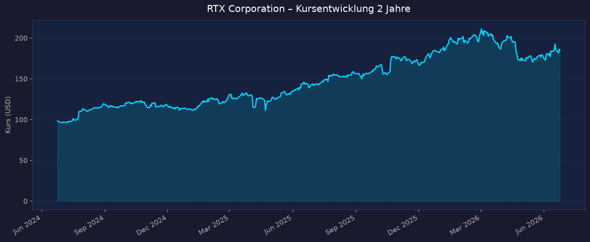
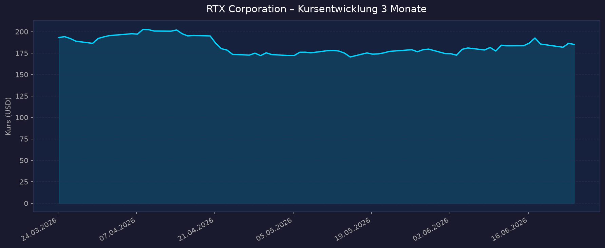

Weltraum-Einordnung: Indirekter Weltraum-Play — Defense-/Aerospace-Konzern mit profitablem Raumfahrt-Bezug, kein defizitärer Pure-Play. Raytheon liefert Weltraum-Sensoren und Missile-Warning-/Tracking-Satelliten (Next-Gen OPIR, SDA Tracking Layer, Golden Dome). Collins Aerospace entwickelt die nächste Generation Raumanzüge und ISS-Systeme. Pratt & Whitney (Triebwerke) ist der dritte Geschäftsbereich. Der Weltraum-Anteil am Konzernumsatz ist klein, aber strukturell wachsend.
📈 1. Kursentwicklung
Aktueller Kurs: 185,11 USD | Veränderung heute: ca. -0,7 % (Vortagesschluss 186,39 USD)
Chart – 2 Jahre

Chart – 3 Monate

| Zeitraum | Kurs Start | Kurs Ende | Veränderung |
|---|---|---|---|
| 2 Jahre | ca. 100 USD (Jun 2024, nach Powder-Metal-Tief) | 185,11 USD | ca. +85 % |
| 3 Monate | ca. 180 USD | 185,11 USD | ca. +3 % |
| 52-Wochen-Hoch | — | 214,50 USD | — |
| 52-Wochen-Tief | — | 140,47 USD | — |
Kurs-Charakter: Beta von nur 0,30 — RTX bewegt sich deutlich ruhiger als der Gesamtmarkt (defensiver Charakter). Aktuell ca. 13 % unter dem 52-Wochen-Hoch, aber ca. +32 % über dem 52-Wochen-Tief. Interaktiv: https://www.tradingview.com/symbols/NYSE-RTX/
💹 2. KGV-Entwicklung (Kurs-Gewinn-Verhältnis)
Aktuelles KGV (TTM): ca. 34,7 | Forward-KGV: ca. 24,4
| Zeitraum | KGV | Einordnung |
|---|---|---|
| Aktuell (TTM) | 34,7 | über 3-/5-Jahres-Schnitt, aber unter dem 12-Monats-Mittel (~39) |
| Forward (2026e) | 24,4 | deutlich günstiger — Gewinnsprung eingepreist |
| Ende 2025 | ~39,6 | erhöht |
| Sep 2025 | ~34,6 | -12 % ggü. 12-Monats-Schnitt |
| Ende 2024 | ~31,9 | — |
| Jun 2024 (Peak) | ~66,7 | verzerrt durch Powder-Metal-Sonderkosten (gedrückte Gewinne) |
Bewertung: Das hohe TTM-KGV ist durch GAAP-Sondereffekte (Akquisitions-Abschreibungen ~1,15 USD/Aktie in 2025, Powder-Metal-Altlasten) verzerrt. Auf bereinigter Basis (Adjusted EPS 2025: 6,29 USD; 2026e: 6,70–6,90 USD) liegt das KGV bei rund 27–29x und das Forward-KGV bei ~27x. Historische 10-Jahres-Spanne: 7–71x (Median ~26). Bewertung damit im oberen, aber für einen Qualitäts-Defense-Wert vertretbaren Bereich.
💰 3. Sales Multiple (Kurs-Umsatz-Verhältnis / P/S)
Aktuelles P/S-Verhältnis: ca. 2,76 (Marktkap. ~250 Mrd. USD / TTM-Umsatz ~90,4 Mrd. USD)
| Zeitraum | P/S Ratio | Einordnung |
|---|---|---|
| Aktuell | ~2,76 | moderat für profitablen Aerospace/Defense-Wert |
| vor 12 Monaten | ~2,2–2,4 (geschätzt) | gestiegen mit dem Kurs |
| vor 24 Monaten | ~1,8–2,0 (geschätzt) | Verlauf teilweise geschätzt, nicht verfügbar |
Trend: Steigend — die P/S-Expansion spiegelt das Re-Rating des gesamten Defense-Sektors 2025/26 (höhere Verteidigungsbudgets, Golden Dome). Für einen Konzern mit ~8 % Nettomarge ist ein P/S von 2,76 nicht günstig, aber im Branchenvergleich vertretbar.
📊 4. Handelsvolumen (Trading Volume)
| Zeitraum | Ø Tagesvolumen | Auffälligkeiten |
|---|---|---|
| 10-Tage-Durchschnitt | ~5,99 Mio. Aktien | leicht erhöht |
| 3-Monats-Durchschnitt | ~5,41 Mio. Aktien | normal |
| 2-Jahres-Durchschnitt | nicht exakt verfügbar | Volumenspitzen typisch an Earnings-Tagen |
Volumentrend: Stabil bis leicht erhöht. Bei ~1,35 Mrd. ausstehenden Aktien ist die Liquidität hoch; keine ungewöhnlichen Volumenanomalien erkennbar.
🏦 5. Insider Trades (letzte ~2 Jahre)
| Datum | Name | Funktion | Kauf/Verkauf | Anzahl Aktien | Wert (USD) |
|---|---|---|---|---|---|
| Feb 2026 | C. Calio / N. Mitchill | CEO / CFO | Verkauf | mehrere Tranchen | ~203–205 USD/Aktie |
| 27.10.2025 | Christopher T. Calio | Chairman, President & CEO | SAR-Ausübung + Verkauf 4.813 | ~9.000 (SAR) | ~178 USD/Aktie |
| 24.10.2025 | Neil Mitchill | EVP & CFO | SAR-Ausübung + Verkauf ~8.900 | ~8.938 (SAR) | ~180 USD/Aktie |
| 24.10.2025 | Director | Board | Verkauf | 2.800 | 178,91 USD/Aktie |
3-Monats-Überblick: Überwiegend Netto-Verkäufe — primär Ausübung von Stock Appreciation Rights mit anschließendem Verkauf (üblich bei Vergütungsplänen, kein klares Stimmungssignal). 2-Jahres-Überblick: Keine nennenswerten Insider-Käufe am offenen Markt; das ist bei Großkonzernen mit aktienbasierter Vergütung normal und nicht zwingend bärisch.
Quelle: SEC Edgar / OpenInsider / StockTitan
🩳 6. Short-Positionen
Aktuelle Short Quote: ~1,23 % des Streubesitzes (Float) — sehr niedrig.
| Zeitraum | Short Interest | Veränderung |
|---|---|---|
| Aktuell | ~1,23 % (16,5 Mio. Aktien) | — |
| Short Ratio (Days-to-Cover) | ~2,86 | normal/niedrig |
| Historie | 2-Jahres-Verlauf nicht im Detail verfügbar | — |
Einschätzung: Niedrig — bei einem defensiven Large-Cap-Defense-Wert ist eine Short-Quote unter 2 % normal. Kein Short-Squeeze-Potenzial, keine ausgeprägte Skepsis am Markt.
🗞️ 7. Aktuelle Nachrichten
| Datum | Quelle | Nachricht | Relevanz |
|---|---|---|---|
| 08.06.2026 | RTX | 100 Mio. USD Investition in Rhode Island für LTAMDS-Radartests und Patriot-GEM-T-Produktion | Hoch |
| 03.06.2026 | RTX / GuruFocus | Raytheon erhält 515 Mio. USD US-Navy-Vertrag für SPY-6-Radarfamilie (Flight-IIA-Zerstörer) | Hoch |
| Jun 2026 | Jefferies | Upgrade auf "Buy" (von "Hold"), Kursziel 220 USD (von 210) | Hoch |
| 28.04.2026 | RTX | Raytheon liefert zweiten Missile-Warning-Sensor (Next-Gen OPIR GEO) an die US Space Force | Hoch (Weltraum) |
| 21.04.2026 | RTX | Q1-2026-Zahlen schlagen Erwartungen, Guidance angehoben | Hoch |
| 28.01.2026 | RTX | Raytheon erhält 197 Mio. USD Vertrag für polnisches Luftaufklärungssystem | Mittel |
| Jan 2026 | RTX | Q4/FY-2025-Zahlen, Rekord-Backlog 268 Mrd. USD (+23 % YoY) | Hoch |
| 2026 | tikr | Pratt & Whitney 6,6 Mrd. USD Triebwerks-Vertrag | Mittel |
| 2026 | MarketBeat | Analysten-Konsens "Buy", Ø-Kursziel 215,73 USD (+18,6 %), 15 Buy / 0 Sell | Mittel |
| 2026 | SpaceNews | Raytheon 250 Mio. USD Vertrag für Missile-Tracking-Satelliten (SDA) | Hoch (Weltraum) |
Sentiment: Überwiegend positiv — starke Auftragslage, Analysten-Upgrades, Rekord-Backlog. Gegengewicht: hohe Bewertung und Sorge um die Wachstumsdynamik gegenüber Peers wie General Dynamics.
📋 8. Letzte 3 Quartalsberichte
Q1 2026 (berichtet 21.04.2026)
| Kennzahl | Ist | Erwartung | Abweichung |
|---|---|---|---|
| Umsatz (Revenue) | 22,1 Mrd. USD (+9 % YoY, +10 % organisch) | 21,44 Mrd. USD | +3,1 % |
| EPS (adjusted) | 1,78 USD (+21 % YoY) | 1,51 USD | +17,9 % |
| EPS (GAAP) | 1,51 USD (inkl. 0,27 Akquisitions-Adj.) | — | — |
| Free Cashflow | 1,3 Mrd. USD (Op. CF 1,9 Mrd.) | — | — |
Guidance: FY-2026-Umsatz auf 92,5–93,5 Mrd. USD angehoben; Adjusted EPS auf 6,70–6,90 USD; FCF bestätigt 8,25–8,75 Mrd. USD. Backlog 271 Mrd. USD (162 Mrd. commercial / 109 Mrd. defense). Kursreaktion: positiv nach klarem Beat.
Q4 2025 (berichtet 27.01.2026)
| Kennzahl | Ist | Erwartung | Abweichung |
|---|---|---|---|
| Umsatz (Revenue) | 24,2 Mrd. USD (+12 % YoY) | ~23 Mrd. USD | leicht über |
| EPS (adjusted) | 1,55 USD (+1 % YoY) | ~1,53 USD | im Rahmen |
| EPS (GAAP) | 1,19 USD (inkl. 0,31 Akquisitions-Adj.) | — | — |
| FY-2025 Adjusted EPS | 6,29 USD (+10 % YoY) | — | — |
| FY-2025 Free Cashflow | 7,9 Mrd. USD (+3,4 Mrd. YoY) | — | — |
Guidance: Rekord-Backlog 268 Mrd. USD (+23 % YoY), Book-to-Bill 1,56. FY-2026-Ausblick: Umsatz 92–93 Mrd., Adjusted EPS 6,60–6,80 USD (später angehoben). Kursreaktion: positiv (starker Backlog, robuster FCF).
Q3 2025 (berichtet 21.10.2025)
| Kennzahl | Ist | Erwartung | Abweichung |
|---|---|---|---|
| Umsatz (Revenue) | 22,5 Mrd. USD (+12 % YoY, +13 % organisch) | — | über Erwartung |
| EPS (adjusted) | 1,70 USD (+17 % YoY) | 1,42 USD (Zacks) | +19,7 % |
| EPS (GAAP) | 1,41 USD | — | — |
| Free Cashflow | 4,0 Mrd. USD (Op. CF 4,6 Mrd.) | — | — |
Guidance: 2025-Ausblick für Umsatz und Adjusted EPS angehoben, FCF bestätigt. Kursreaktion: positiv (deutlicher EPS-Beat).
🌍 9. Marktkontext & Wettbewerb
Markt / Branche: US-Aerospace & Defense; relevantes Weltraum-Teilsegment Missile-Warning/-Tracking-Satelliten und Raumfahrt-Systeme. Treiber 2026: Rekord-Verteidigungsbudgets, der Ukraine-Konflikt (Patriot, NASAMS) und das Golden-Dome-Programm — eine ~185 Mrd. USD schwere Raketenabwehr-Initiative mit ~7,2 Mrd. USD allein für Weltraum-Sensoren; FY2027-Budgetantrag ~17,5 Mrd. USD.
| Wettbewerber | Stärke | Schwäche |
|---|---|---|
| Lockheed Martin (LMT) | Rekord-Backlog ~194 Mrd. USD, F-35, Weltraum-Führer | F-35-Abhängigkeit, träges Wachstum |
| Northrop Grumman (NOC) | Nukleare Abschreckung, Weltraum-Systeme, Backlog ~96 Mrd. USD | kleinerer kommerzieller Anteil |
| General Dynamics (GD) | bessere Kapitalrendite, Marine/IT | weniger Missile-/Space-Exposure |
| Boeing / Anduril / SpaceX | kommerzielle Raumfahrt, neue Player (Golden Dome) | SpaceX (SPCX) seit IPO 12.06.2026 starker Sektor-Treiber |
Branchentrends: (1) Strukturell steigende Verteidigungsausgaben in den USA und Europa. (2) Golden Dome verschiebt Budgets in Richtung Weltraum-Sensorik und Missile-Tracking — Raytheons Kernkompetenz (Next-Gen OPIR, SDA Tracking Layer). (3) Der SpaceX-Börsengang (12.06.2026, ~1,75 Bio. USD Bewertung) hat den gesamten Space-Sektor 2026 befeuert und das Anlegerinteresse an Weltraum-Exposure erhöht — RTX profitiert als profitabler indirekter Play, ohne den Bewertungsexzess der kleinen Pure-Plays.
Marktposition: Führend im Bereich Missile Defense und Sensorik (Patriot, LTAMDS, SPY-6), starker Nummer-2/3-Player im Verteidigungs-Weltraumsegment hinter Lockheed/Northrop. Diversifiziert über drei Säulen (Raytheon, Collins Aerospace, Pratt & Whitney) mit hohem kommerziellen Aerospace-Anteil.
Risiken aus dem Marktumfeld: Abhängigkeit von US-Verteidigungsbudgets und politischen Prioritäten; Programm-/Ausführungsrisiken (Erinnerung: Powder-Metal-Triebwerksproblem bei P&W); Lieferketten-Inflation; intensive Konkurrenz um Golden-Dome-Aufträge mit neuen Playern (Anduril, SpaceX).
🧮 Bewertungs-Score
| Kriterium | Score (1–10) | Begründung |
|---|---|---|
| Bewertung | 6 | Forward-KGV ~24–27x (bereinigt), P/S 2,76 — fair bis leicht ambitioniert; günstiger als auf TTM-GAAP-Basis, aber kein Schnäppchen |
| Wachstum & Momentum | 8 | +9–12 % Umsatzwachstum, Rekord-Backlog 271 Mrd., Book-to-Bill 1,56, Analysten-Upgrades, +85 % in 2 Jahren |
| Bilanz & Sicherheit | 6 | Debt/Equity ~0,57, Cash 6,8 Mrd. vs. Schulden 38,9 Mrd., Current Ratio nur ~1,0 — solide, aber hoch verschuldet; FCF 7,9 Mrd. deckt das ab |
| Qualität & Wettbewerbsposition | 8 | Marktführer Missile Defense/Sensorik, breiter Burggraben, 90-Jahre-Dividendenhistorie; Nettomarge ~8 % und ROE ~11,5 % aber nur durchschnittlich |
| Chancen vs. Risiken | 7 | Golden Dome + Verteidigungs-Superzyklus als Katalysator; Risiken: Bewertung, Budget-/Programm-Abhängigkeit, P&W-Altlasten |
Gewichteter Gesamtscore: 7,0 / 10 (Gewichtung: Bewertung 20 %, Wachstum 25 %, Bilanz 15 %, Qualität 25 %, Chancen/Risiken 15 %)
5-Jahres-Szenario (Horizont 2031)
Basis: Kurs heute 185 USD, Adjusted EPS 2026e ~6,80 USD, Dividende ~2,72 USD/Jahr (steigend).
| Szenario | Annahmen | Kurs 2031 | Gesamtrendite inkl. Dividende |
|---|---|---|---|
| Bär | Verteidigungsbudgets stagnieren, P&W-Probleme kehren zurück, KGV-Kompression auf ~18x | ~170 USD | ca. -8 % bis +5 % (inkl. ~8 % Dividenden) |
| Base | EPS wächst ~8 %/Jahr auf ~10 USD, KGV ~22x, stetige Dividende | ~220–230 USD | ca. +25–35 % (Kurs) + ~12–15 % Dividenden = ~40–50 % |
| Bull | Golden Dome + Space-Superzyklus, EPS ~12 USD, KGV ~24x, Dividenden-Wachstum | ~285–300 USD | ca. +55–62 % (Kurs) + ~15 % Dividenden = ~70–77 % |
Annahmen grob; Renditen ohne Steuern/Gebühren. Dividende historisch jährlich steigend (6 Jahre in Folge Erhöhung, Zahlungen seit 1936).
📝 Gesamteinschätzung
Stärken:
- Rekord-Backlog (271 Mrd. USD) und Book-to-Bill 1,56 sichern mehrjährige Umsatzvisibilität
- Marktführer in Missile Defense/Sensorik mit klarem Golden-Dome- und Weltraum-Sensor-Exposure (Next-Gen OPIR, SDA)
- Defensiver Charakter (Beta 0,30), zuverlässige Dividende (Zahlungen seit 1936, 6 Jahre Erhöhung in Folge, Payout ~50 %)
- Starker Free Cashflow (7,9 Mrd. 2025, Guidance 8,25–8,75 Mrd. 2026), drei diversifizierte Säulen
- Konsens-Rating "Buy", Ø-Kursziel ~216 USD (+18 %), Jefferies-Upgrade auf 220 USD
Risiken:
- Bewertung im oberen historischen Bereich (Forward-KGV ~24–27x bereinigt, P/S 2,76)
- Hohe absolute Verschuldung (38,9 Mrd. USD), Current Ratio nur ~1,0
- Abhängigkeit von US-Verteidigungsbudgets und politischen Prioritäten
- Programm-/Ausführungsrisiken bei Pratt & Whitney (Powder-Metal-Altlast)
- Insider zuletzt netto Verkäufer (überwiegend SAR-getrieben, kein starkes Signal)
- Weltraum-Geschäft ist nur ein kleiner Konzernanteil — kein reiner Space-Play
Fazit: RTX Corporation ist ein profitabler, dividendenstarker indirekter Weltraum-Play mit dominanter Stellung in Raketenabwehr und Weltraum-Sensorik. Der Verteidigungs-Superzyklus und das Golden-Dome-Programm liefern strukturelle Katalysatoren, der Rekord-Backlog stützt Wachstum und Cashflow. Die Bewertung ist auf bereinigter Basis fair, lässt aber wenig Spielraum für Enttäuschungen; wer einen defensiven Qualitätswert mit Weltraum-Bezug und verlässlicher Dividende sucht, findet ihn hier — der reine Space-Hebel ist jedoch begrenzt. Bewertungs-Score 7,0 / 10.
Datenquellen: Yahoo Finance · yfinance · Finviz · MarketBeat · Macrotrends/FullRatio · StockAnalysis · SEC Edgar · OpenInsider/StockTitan · PR Newswire/Nasdaq · RTX.com · SpaceNews · Simply Wall St · Investing.com Kein Anlageberatung — rein informative Auswertung öffentlicher Daten